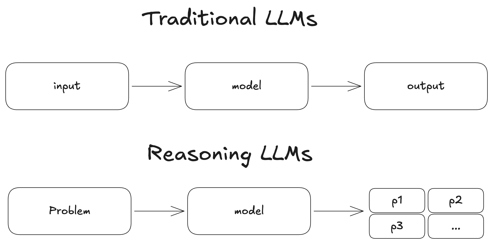
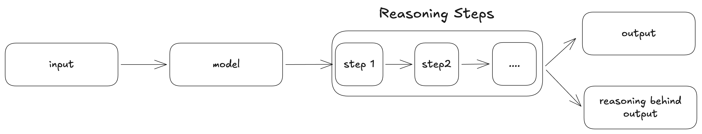
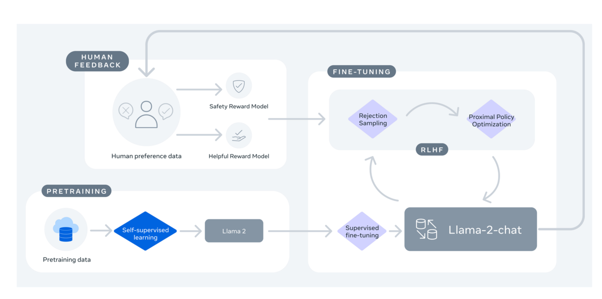
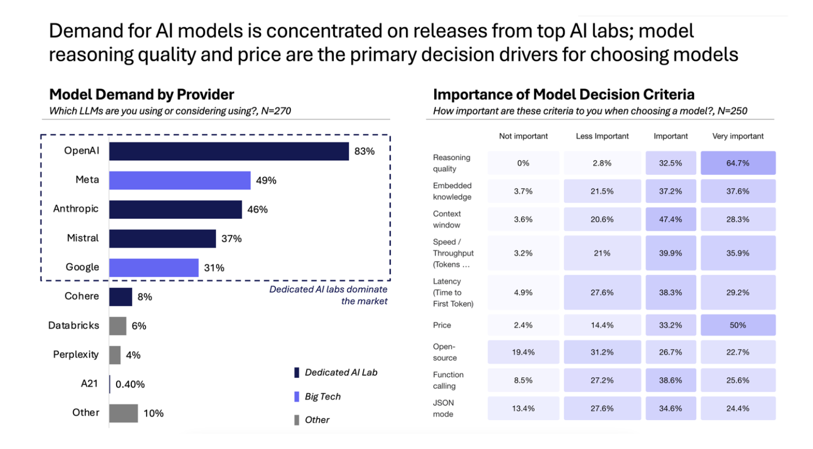
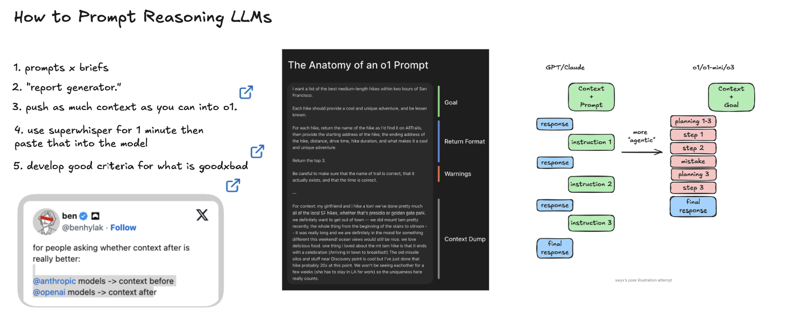
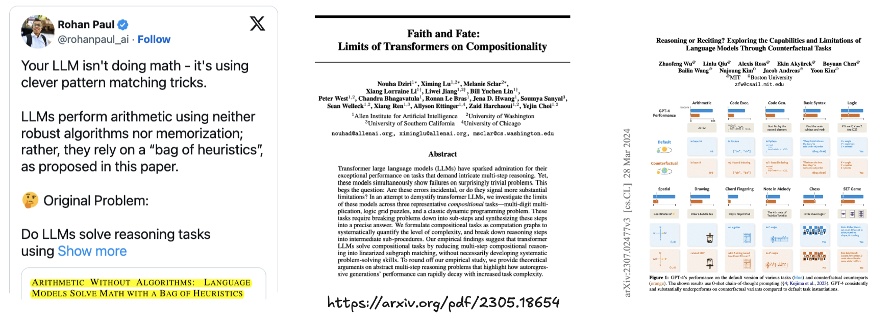

class: center, middle # Working with Reasoning Models ## How and when to use LLMs for thinking and reasoning ### Instructor: Lucas B. Nicolosi Soares --- # Agenda 1. What is a Reasoning LLM? -- 2. Reasoning Models vs Traditional LLMs -- 3. Why use a Reasoning LLM? -- 4. When to use a Reasoning LLM? -- 5. How to Use a Reasoning LLM? -- 6. Limitations of Reasoning LLMs -- 7. Choosing a Reasoning LLM -- 8. Hands-on with Reasoning LLMs --- # What is a Reasoning LLM?  --- # How? --  --- # How an LLM is Trained - Busy Person Guide  --- # How an LLM is Trained - Busy Person Guide <img src="../notebooks/assets-resources/what-is-reasoning-llm4.png" width="120%" style="margin-left: -75px;margin-top: -45px;"> --- # What is a Reasoning LLM? - Language models designed for complex, multi-step problems -- - Generate intermediate reasoning steps or "thought processes" -- - Break down tasks into logical sub-steps -- - Similar to human step-by-step problem solving -- - More accurate and explainable results on challenging tasks: - Mathematical problems - Logic puzzles - Code debugging --- class: center, middle # Q&A & Break --- class: center, middle # Reasoning Models vs Traditional LLMs --- ## Traditional LLMs - Direct pattern-based prediction -- - One-shot "I'm feeling lucky" approach -- - Quick but less reliable on complex tasks -- - No explicit reasoning steps ## Reasoning LLMs -- - Step-by-step problem solving -- - Chain-of-thought (CoT) approach -- - More methodical but slower -- - Shows intermediate steps --- class: center, middle # Q&A & Break --- # Key Capabilities of Reasoning LLMs 1. __Chain-of-Thought Reasoning__ -- - Internal dialogue approach -- - Step-by-step problem solving -- - "Thinking aloud" in text -- 2. __Self-Consistency__ -- - Verifies own answers -- - Revisits problematic solutions -- 3. __Structured Outputs__ -- - Organized reasoning steps -- - Numbered thoughts -- - Traceable calculations --- class: center, middle # Why use a Reasoning LLM? --- <div style="margin-top: 100px;">  </div> <p style="font-size: 14px; margin-left: 0px"> <a href='https://artificialanalysis.ai/'>Artificial Analysis AI Review</a> </p> --- class: center, middle # When to use a Reasoning LLM? --- # When to use a Reasoning LLM? - Background tasks where latency isn't critical -- - Complex problems requiring deeper thinking -- - Tasks benefiting from extensive reasoning -- - Research and planning-heavy workflows --- ## Ideal Use Cases -- - **Complex Problem Solving** - Mathematical proofs - Logic puzzles - Multi-step reasoning -- - **Deep Analysis** - Research papers - Document analysis - Meeting notes interpretation -- - **Planning & Agency** - Workflow planning - Agentic systems - Strategic decision-making --- ## Practical Applications -- - **Data Analysis** - Medical diagnostics - Complex data interpretation - Anomaly detection -- - **Background Processing** - Batch processing workflows - Overnight analysis jobs -- - **Evaluation Tasks** - LLM as judge - Quality assessment - Verification workflows --- class: center, middle # Q&A & Break --- # How to Use a Reasoning LLM? --- class: center, middle <h1> <span style="background-color: lightgreen"> Whiteboard - How to Use a Reasoning LLM? </span> </h1> --- class: center, middle <h1> <span style="background-color: lightgreen"> Hands-on - How to Use a Reasoning LLM? </span> </h1> ---  <p style="font-size: 14px; margin-left: 0px"> <a href=''></a> </p> --- class: center, middle # Q&A & Break --- # Limitations of Reasoning LLMs --- ## 1. Performance Trade-offs - **Increased latency**: Extended thinking process leads to significantly longer response times -- - **Higher resource requirements**: Often require more computational resources -- - **Cost implications**: More tokens and processing time translate to higher operational costs -- - **Scalability challenges**: Multiple concurrent requests become more resource-intensive --- ## 2. Reasoning Quality Constraints - **Domain-specific limitations**: Performance varies considerably across different subject areas -- - **Brittleness with novel problems**: May struggle with problem types not encountered during training -- - **Inconsistent depth of reasoning**: Quality of reasoning can vary within the same model -- - **Over-confidence in incorrect reasoning**: May present flawed reasoning with high confidence --- ## 3. Knowledge and Context Limitations - **Bounded knowledge**: Limited to training data available at model development time -- - **Context window constraints**: Struggle with very lengthy problems despite large context windows -- - **Information integration challenges**: Difficulty maintaining coherence across extensive reasoning chains -- - **Limited transfer learning**: Reasoning in one domain doesn't always transfer to other domains --- ## Limitations of Reasoning LLMs  <p style="font-size: 14px; margin-left: 0px"> <a href='https://arxiv.org/pdf/2305.18654'>Dziri et al. (2023)</a> </p> <p style="font-size: 14px; margin-left: 0px"> <a href='https://arxiv.org/pdf/2307.02477'>Wu et al. (2024)</a> </p> --- class: center, middle # Q&A & Break --- # Choosing a Reasoning LLM --- class: center, middle <h1> <span style="background-color: lightgreen"> Whiteboard - Choosing a Reasoning LLM </span> </h1> --- class: center, middle <h1> <span style="background-color: lightgreen"> Hands-on with Reasoning LLMs </span> </h1> --- # Connect With Me ## 📚 [Course materials](place-github-url) ## 🔗 [LinkedIn](https://www.linkedin.com/in/lucas-soares-969044167/) ## 🐦 [Twitter/X](https://x.com/LucasEnkrateia) ## 📺 [YouTube](https://www.youtube.com/@automatalearninglab) ## 📧 Email: lucasenkrateia@gmail.com